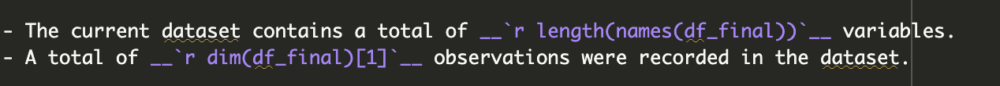
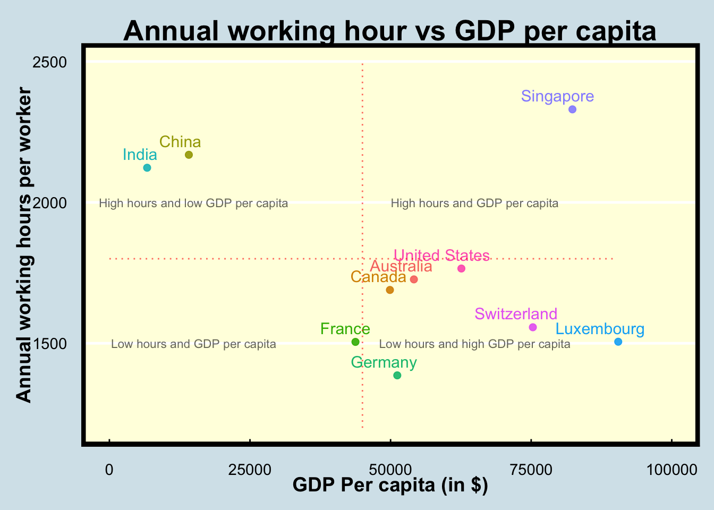
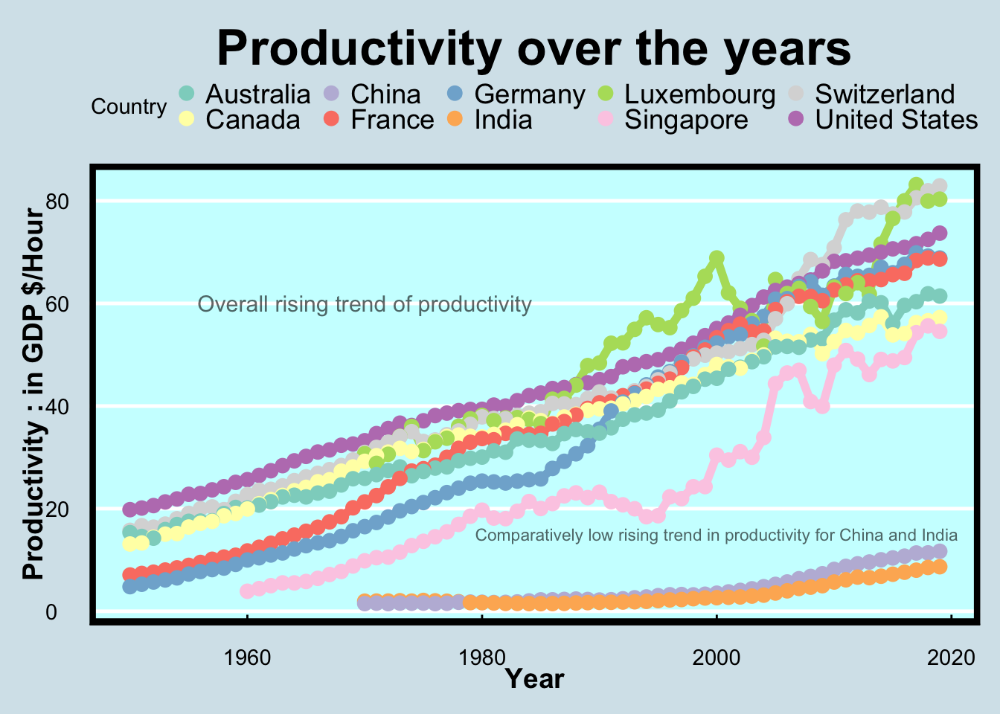

Introduction
The current dataset contains the annual working hours per worker along with the population estimates of all the reporting countries dating from the start of the calendar year to 2021. The data source has been detailed on the Our World In Data website.
This is an important metric to track as the number of annual working hours is a strong indicator of the labor laws prevalent in the country along with the work-life balance for the various employees. High working hours invariably lead to higher health issues such as stress, anxiety, and depression. With the advent of strict labor laws for the welfare of employees, the current study will dive deeper into how long are employees from various countries and continents working as years have passed on and whether the long hours are indicating strong growth in the economy.
What are we looking to answer?
The current study aims to answer some of the following pertinent questions:
- Which countries are reporting the highest annual working hours per employee? How have the annual working hours changed for these countries over time after stricter measures such as the implementation of labor codes in recent decades?
- How are the working hours different for countries with high productive economies (GDP) ? Do the annual working hours vary with population and how do countries with comparable populations such as China and India fare?
- Does working for longer hours directly mean that the productivity output of the economy is higher ?
What is this dataset all about?
The current dataset which has been sourced from the Our World In Data website records the average annual working hours, state of economy (in terms of GDP), and population for a particular country over the years. In addition to these variables, the current dataset is merged with another dataset which contains important data on the \({productivity}/{hour}\) for the reporting countries. This measure in effect, tells us about the economic productivity of the country for every hour of work done by an employee (in $/hour).
The above-mentioned dataset can be obtained from the “Our World in Data” website through this link.
Table @ref(tab:variable) below shows the various variables present in our dataset.
var <- data.frame(Variable_names = c(names(df_final))) #A dataframe for variables
var %>% kable(caption = 'This table contains the various variables present in this dataset which will allow us to analyse the annual working hours of the countries under consideration. Additionally, the variables in this table will allow us to understand the productivity towards the economy for each nation',booktabs = TRUE) %>%
kable_styling(bootstrap_options = c("bordered","hover")) #Creating a table| Variable_names |
|---|
| Entity |
| Code |
| Year |
| Annual working hours per worker |
| GDP per capita (output, multiple price benchmarks) |
| Population (historical estimates) |
| Continent |
| Productivity: output per hour worked |
What does our data contain ?
- Here are some of the important descriptions of the dataset:
- The current dataset contains a total of 8 variables.
- A total of 55873 observations were recorded in the dataset.
- The image @ref(fig:inline) shows the inline r codes that were used to obtain the above results.

- After applying the head function to display the first two rows of the clean data, we find the following results.
df_clean <- na.omit(df_final)
head(df_clean) %>%
DT::datatable(width = 1000, height = 450, options = list(pageLength = 5)) #Transforms a dataframe to an intuitive datatable.- The datatypes of the variables in the dataset can be observed through the results of the following R code chunk.
str(df_clean) 'data.frame': 65 obs. of 8 variables:
$ Entity : chr "Argentina" "Australia" "Austria" "Bangladesh" ...
$ Code : chr "ARG" "AUS" "AUT" "BGD" ...
$ Year : num 2015 2015 2015 2015 2015 ...
$ Annual working hours per worker : num 1703 1746 1605 2419 1575 ...
$ GDP per capita (output, multiple price benchmarks): num 21198 48712 49619 3715 42891 ...
$ Population (historical estimates) : num 4.33e+07 2.38e+07 8.64e+06 1.58e+08 1.12e+07 ...
$ Continent : chr "South America" "Oceania" "Europe" "Asia" ...
$ Productivity: output per hour worked : num 27 56.05 62.7 4.03 66.49 ...
- attr(*, "na.action")= 'omit' Named int [1:55808] 1 2 3 4 5 6 7 8 9 10 ...
..- attr(*, "names")= chr [1:55808] "1" "2" "3" "4" ...What can we infer from the data ?
In order to answer some of the pertinent research questions, we will need to create visualizations that can help us understand the data better and allow us to draw inferences. The intuitive visualizations are created using the ggplot2 library which is based on the grammar of graphics. The documentation for the ggplot2 library can be referred to in greater detail through this link.
Figure @ref(fig:plot1) is a scatter plot between the annual working hours and the GDP per capita of some of the nations of concern in the current study.
countries <- c('India','China','Switzerland','Australia','United States','Germany','France','United Kindgom','Luxembourg','Canada','Singapore') #Countries under consideration
df_2019 <- df_final %>% select(c(`Year`,`Entity`,`Annual working hours per worker`,
`GDP per capita (output, multiple price benchmarks)`,
`Population (historical estimates)`)) %>%
filter(Year==2019, `Annual working hours per worker`!='NA',
`GDP per capita (output, multiple price benchmarks)`!='NA',Entity %in% countries) %>%
arrange(-`GDP per capita (output, multiple price benchmarks)`) #Filtering the data
options(scipen=1) #Removes scientific notation in the plot
pl1<- ggplot(head(df_2019,10),aes(x=`GDP per capita (output, multiple price benchmarks)`,
y=`Annual working hours per worker`,
color=`Entity`,
label=Entity)) +
labs(color= "Country") +
geom_point(alpha=0.9,size=2) +
geom_text(hjust=0.7,vjust=-0.7,size=4) +
theme_economist() +
theme(legend.position="none",plot.title = element_text(size = 20, face = "bold",hjust=0.5)) +
ylim(1200,2500) + xlim(0,100000) + xlab('GDP Per capita (in $)') +
ggtitle("Annual working hour vs GDP per capita") +
annotate("segment", x = 45000, xend = 45000, y = 1200, yend = 2500,
colour = "red",
alpha=0.6,
linetype=3) +
annotate("segment", x = 0, xend = 90000, y = 1800, yend = 1800,
colour = "red",
alpha=0.6,
linetype=3) +
annotate("text", x = 15000, y= 1500,
colour = "black",
alpha=0.6,
label='Low hours and GDP per capita',
size = unit(3, "pt")) +
annotate("text", x = 15000, y= 2000,
colour = "black",
alpha=0.6,
label='High hours and low GDP per capita',
size = unit(3, "pt")) +
annotate("text", x = 65000, y= 2000,
colour = "black",
alpha=0.6,
label='High hours and GDP per capita',
size = unit(3, "pt")) +
annotate("text", x = 65000, y= 1500,
colour = "black",
alpha=0.6,
label='Low hours and high GDP per capita',
size = unit(3, "pt")) +
theme(panel.background = element_rect(fill = 'lightyellow'),
panel.border = element_rect(colour = "black",size=3),
axis.title=element_text(size=14,face="bold")) #Plotting the graph
print(pl1)
Figure @ref(fig:plot1) titled “Annual working hour vs GDP per capita” represents a scatter plot with the X-axis containing the variable of GDP Per capita (in $) and the Y-axis containing the variable of Annual working hours per worker. The plot has been created for a list of countries with well-established economies along with some of the manufacturing-based economies like China and India. Below are some of the key points observed that can provide answers to the research questions posed in section 3 :
The scatterplot has been divided into 4 quadrants to facilitate the clustering of the various economies and the quadrants have been explained through the plot annotation. We can observe that the emerging developing nations with comparable populations such as India and China are reporting considerably higher annual working hours than the other major developed economies. This could be a result of the lack of strict labor codes prevalent in these countries leading to highly overworked employees.
Singapore is a developed economy with a very low population. Yet, the annual working hours are reported to be higher than all the developed nations as well as the developing economies of India and China. This could be attributed to the hectic working culture prevalent in the corporates of the country.
df_productivity <- df_final %>% select(c(`Entity`,`Year`,
`Productivity: output per hour worked`)) %>%
filter(`Productivity: output per hour worked`!='NA',
Entity %in% countries) %>%
arrange(-`Productivity: output per hour worked`)
pl2<- ggplot(df_productivity,aes(x=Year,y=`Productivity: output per hour worked`,color=Entity)) +
geom_line(size=2) + geom_point(size=3) + theme_economist() + labs(color='Country') +
ggtitle("Productivity over the years") +
ylab("Productivity : in GDP $/Hour") +
scale_color_brewer(palette = "Set3") +
theme(panel.background = element_rect(fill = '#CCFFFF'),
plot.title = element_text(size = 25,
face = "bold",hjust=0.5),
legend.key.size = unit(0.25, 'cm'),
panel.border = element_rect(colour = "black",size=3),
axis.title=element_text(size=14,face="bold")) +
annotate("text", x = 1970, y= 60,
colour = "black",
alpha=0.6,
label='Overall rising trend of productivity',
size = unit(4, "pt")) +
annotate("text", x = 2000, y= 15,
colour = "black",
alpha=0.6,label='Comparatively low rising trend in productivity for China and India',
size = unit(3, "pt"))
print(pl2)
Figure @ref(fig:plot2) titled “Productivity over the years” represents a line chart containing a temporal analysis of the productivity of each of the selected nations from plot 1. Productivity is defined as the contribution to the GDP (in $) for each hour worked by an employee. The following can be inferred from the plot :
The temporal analysis for productivity (contribution to GDP in $) against the years indicates that there is a steady increase in the contribution towards GDP (in $) for all the countries under consideration. In essence, the temporal trend suggests that over the many decades of study, an hour of work done by an employee yields a higher contribution towards the nation’s economy for every country.
In figure @ref(fig:plot1), it was established that Singapore, China, and India were the countries with the highest annual working hours. While intuitively, it may be hypothesized that higher working hours would mean greater productivity, however as per figure @ref(fig:plot2) , it can be observed that the productivity of the economy for these three countries were found to be lower than that of the other economies. Therefore, longer working hours per employee does not necessarily contribute to higher productivity of the economy.
Conclusion
The above study explored the various relations between the annual working hours of each country’s economy, its GDP per capita and the contribution towards the productivity of its economy. In order to create a condensed analysis of the major economies, a specific list of countries was curated and its results were visualised through figures @ref(fig:plot1) and @ref(fig:plot2) for inference. The study was observed to draw the following inferences delineated as follows :
Emerging economies based on GDP per capita with similar populations such as China and India which are heavily dependent on their manufacturing industries were observed to have considerably higher annual working hours when compared to developed economies.This could be a result of the leaner labor codes enforced in these countries when compared to the developed economies.
While Singapore is a country with high GDP per capita and low population, it was observed to report higher annual working hours compared to China and India along with all other developed economies under consideration. This could be a result of the work culture in corporations based out of Singapore.
A steady rise in the productivity of each nation under consideration was observed which essentially meant that an employee’s hourly output has been increasing over time.
While Singapore, China, and India reported the highest annual working hours, it’s productivity was observed to be lower than all other developed economies in the current study. This finding demonstrated that higher annual working hours do not necessarily lead to higher productivity in the economy.
______________________________________ End of file _______________________________________